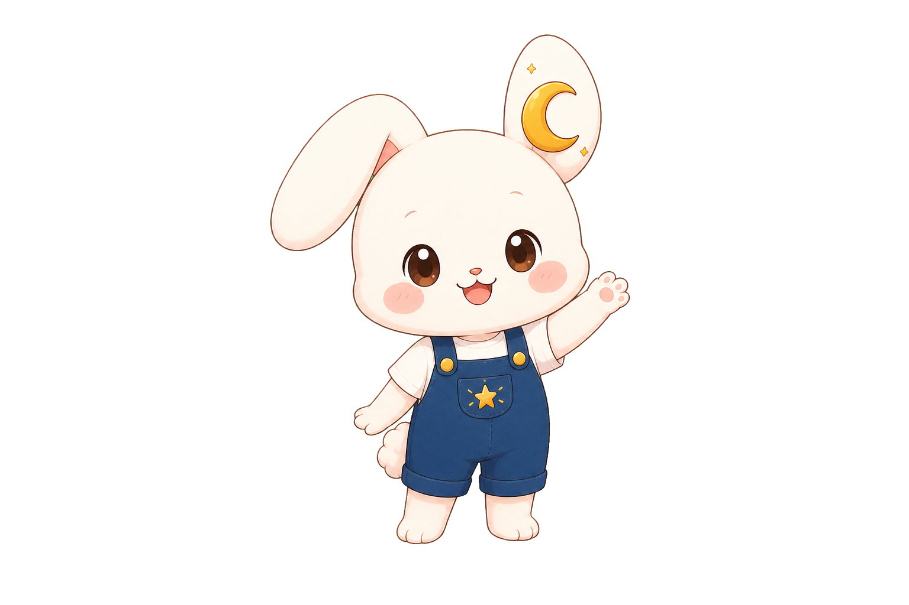
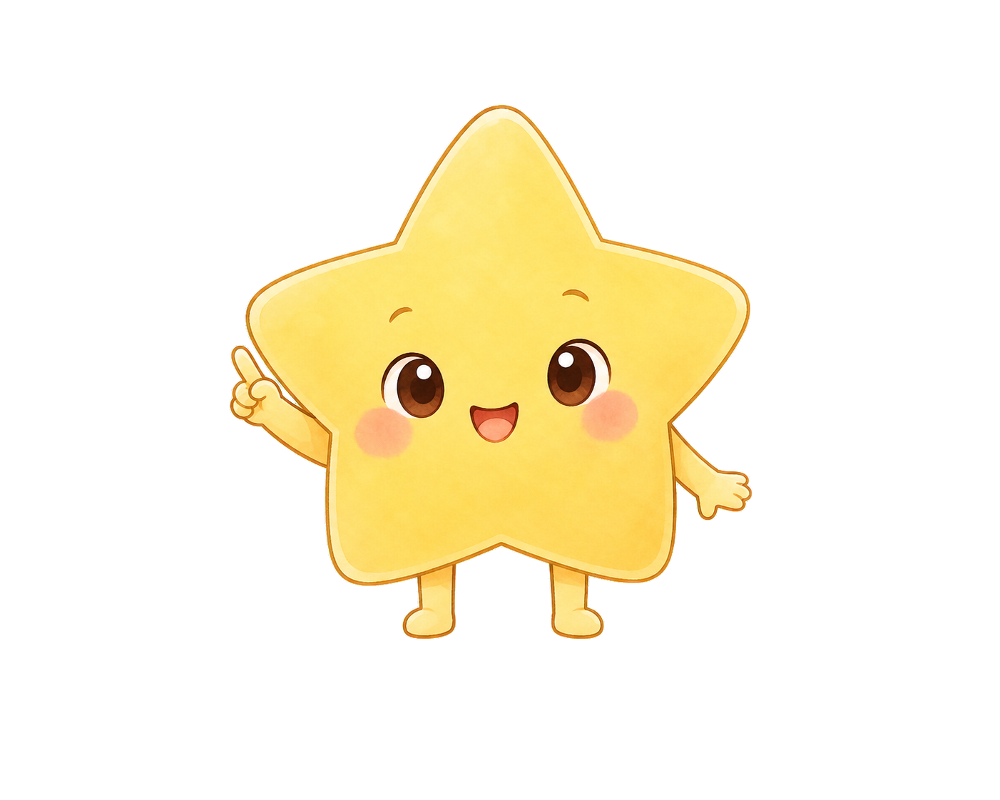
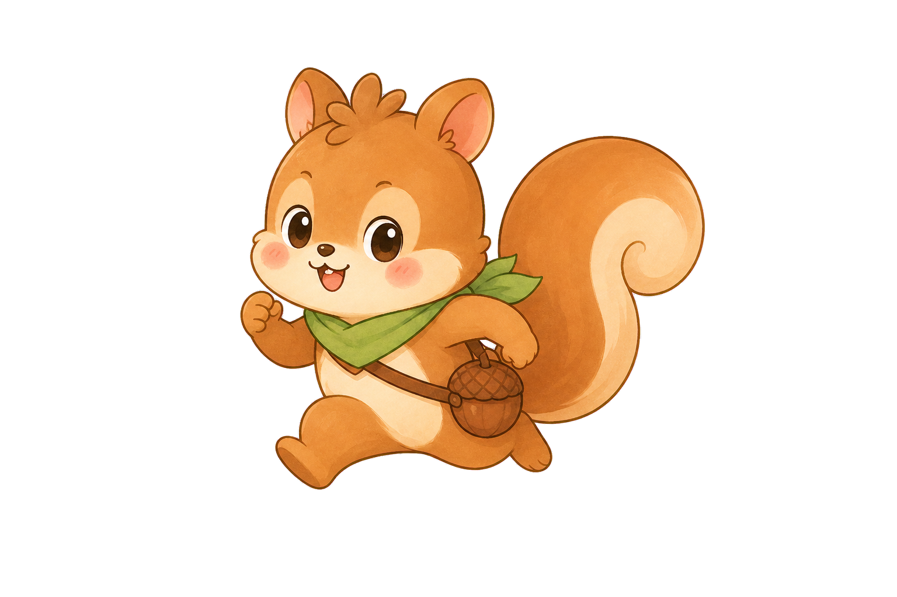

KOREAN KIDS ANIMATION · STUDIO BIBLE
달빛 아래에서 시작되는
작고 다정한 모험
호기심 많은 달토끼 루니와 친구들이 마음, 우정, 자연과 용기를 배우는 어린이 애니메이션이에요.
- 100
- 가지 이야기
- 8
- 명의 친구
- 5분
- 즐거운 배움



THE WORLD OF LUNI
매일 밤, 달나라는
새로운 이야기를 열어요
달나라 마을에는 별빛 호수, 구름 숲, 무지개 언덕처럼 마음을 닮은 장소들이 있어요. 달할머니의 작은 임무를 따라가며 루니는 친구와 함께 답을 찾아요.
루니의 집달나라 마을구름 숲별빛 호수무지개 언덕별빛 기차역꿈의 정원마법 도서관
MEET THE FRIENDS
루니와 일곱 친구들
서로 다른 마음과 재능이 모이면 무엇이든 함께 해낼 수 있어요.
LUNI ANIMATION
루니의 첫 번째 이야기
길을 잃은 작은 별이 집으로 돌아갈 수 있도록 루니와 별이가 기억 속 단서를 함께 찾아요.
100 EPISODE ROADMAP
함께 자라는 100가지 이야기
세상을 발견하고, 모험하고, 상상하며 마음이 자라는 이야기를 만나 보세요.
5-MINUTE FORMAT
5분 동안 함께해요
- 00:00–00:30루니의 반가운 인사
- 00:30–01:30도움이 필요한 친구를 만나요
- 01:30–03:30함께 생각하고 여러 번 시도해요
- 03:30–04:30마음을 나누며 문제를 해결해요
- 04:30–05:00오늘의 노래를 함께 불러요
LUNI’S PROMISE
루니가 약속할게요
- 무섭지 않고 포근한 이야기를 들려줄게요
- 친구의 마음을 먼저 들어 줄게요
- 실수해도 다시 해 볼 수 있어요
- 모든 친구의 다름을 소중히 여겨요
- 안전하고 다정한 방법을 함께 배워요
- 마지막에는 신나는 노래를 불러요